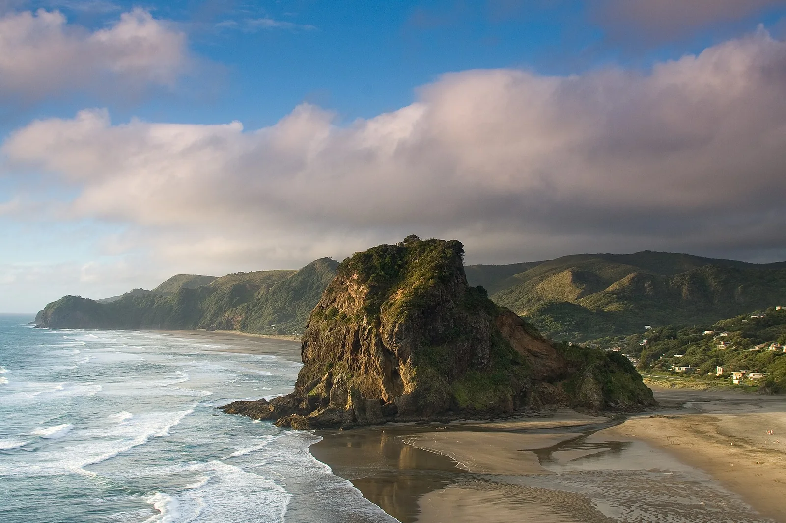

Piha
Nouvelle-Zélande · surf, bodyboard

Une plage de sable noir volcanique au pied d'une forêt, sur la côte ouest d'Auckland. Beauté brute et courants parmi les plus traîtres du pays.
- Lieu
- Nouvelle-Zélande
- Niveau
- Expert
- Activités
- surf, bodyboard
- Type d'eau
- Mer / océan
- Coordonnées
- -36.95, 174.47 (position approximative du secteur)
Dangers à connaître
- Courants de retour très puissants, sauvetages fréquents.
- Houle de Tasman souvent grosse et désordonnée.
- Rochers du Lion Rock et de la pointe sud.
Le conseil d'Ocean Buddy
Ne te baigne jamais hors des drapeaux : c'est la plage la plus secourue de Nouvelle-Zélande.
Ouvrir dans Ocean Buddy Télécharger sur l'App Store
Source : Description historique Ocean Buddy · vérification externe en attente.